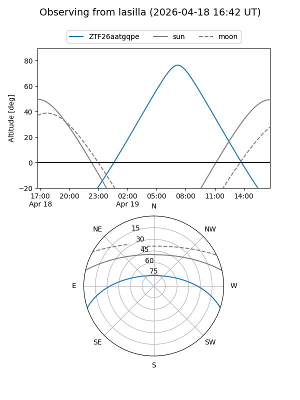
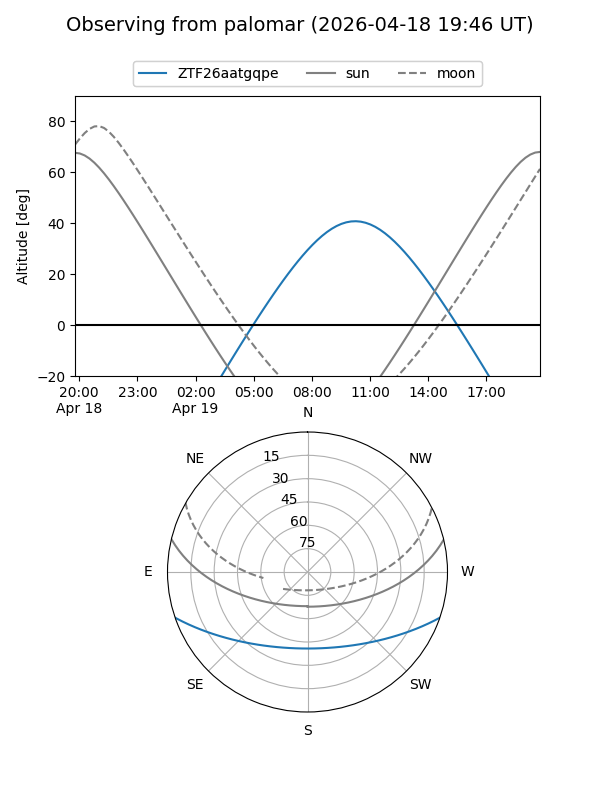

ZTF26aatgqpe
Target ZTF26aatgqpe at 2026-04-18 11:57
Aliases and brokers:
FINK: link
Lasair: link
ALeRCE: link
alt names
ZTF26aatgqpe (ztf,fink_ztf)
Coordinates:
equatorial (ra, dec) = 243.8823,-15.76784
equatorial (HMS+DMS) = 16:15:31.76,-15:46:04.24
galactic (l, b) = (358.2406,+24.50908)
Flags:
Photometry:
last ztfg=19.43
1 ztfg detections
Lightcurve
Visibility


Additional plots